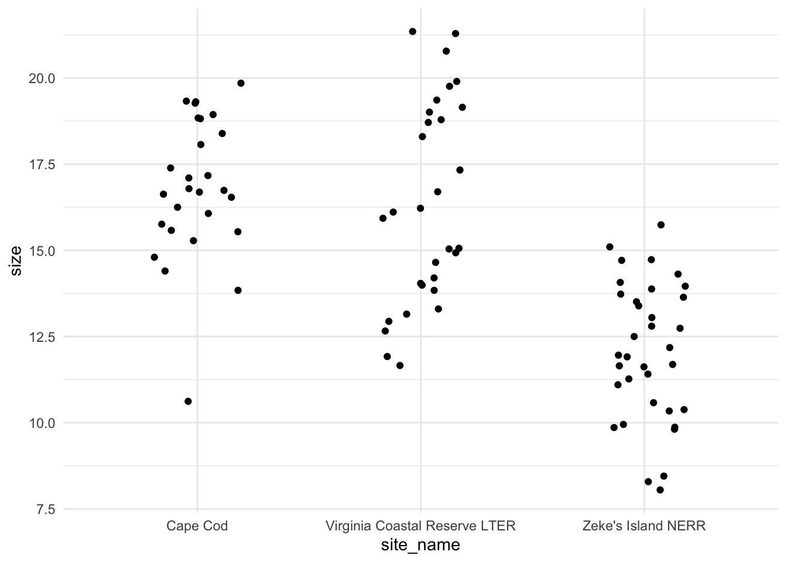
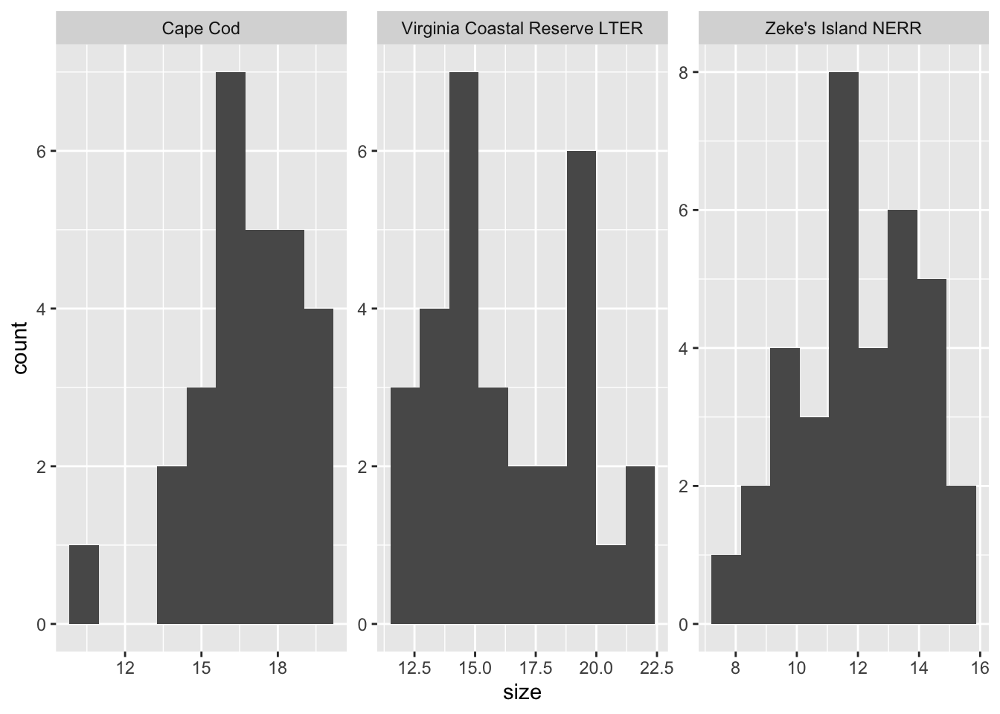
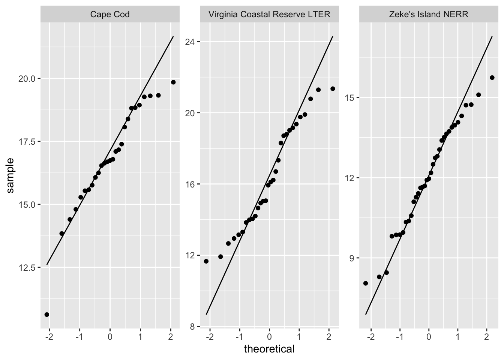
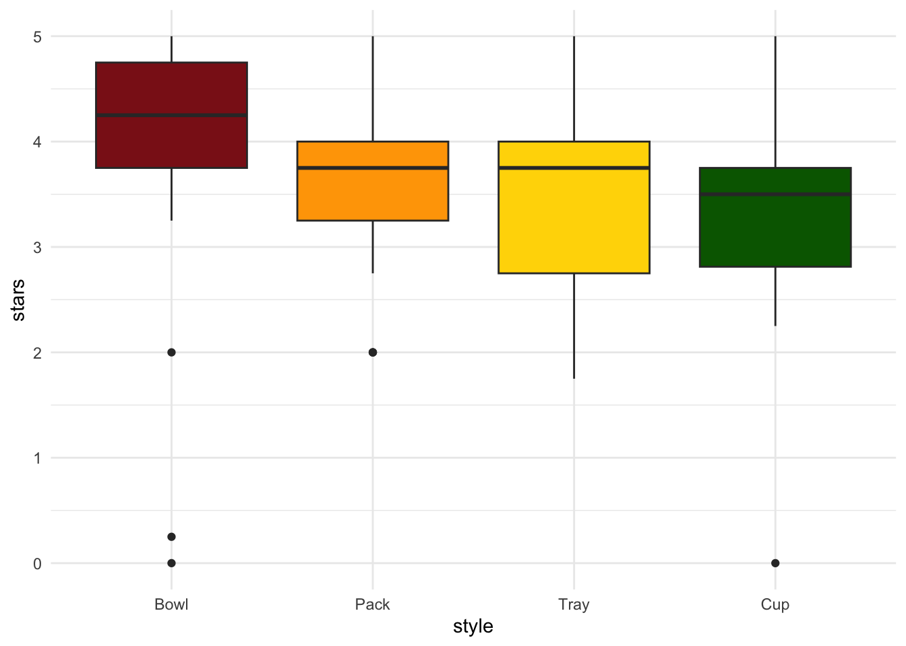

library(tidyverse)
library(lterdatasampler)
library(effectsize)
library(rstatix)
library(car)1. Summary
Packages
tidyverse
lterdatasampler
effectsize
rstatix
car
Operations
New functions
- do a Shapiro-Wilk test using
shapiro.test()
- do a Levene’s test using
car::leveneTest()
- do an ANOVA using
aov()
- look for more information from model results using
summary()
- do post-hoc Tukey test using
TukeyHSD()
- calculate effect size for ANOVA using
effectsize::eta_squared()
- do Kruskal-Wallis test using
kruskal.test()
- do Dunn’s test using
rstatix::dunn_test()
- calculate effect size for Kruskal-Wallis test using
rstatix::kruskal_effsize()
Review
- read in data using
read_csv()
- chain functions together using
%>%
- select columns using
select()
- rename columns using
rename()
- visualize data using
ggplot()
- create histograms using
geom_histogram()
- visualize QQ plots using
geom_qq()andgeom_qq_line()
- create multi-panel plots using
facet_wrap()
- group data using
group_by()
- summarize data using
reframe()
Data sources
The Plum Island Ecosystem fiddler crab data is from lterdatasampler (data info here). The ramen ratings data set is a Tidy Tuesday dataset - see more about the data and its source here.
2. Code
1. Packages
2. Parametric tests
a. Cleaning and wrangling
pie_crab_clean <- pie_crab %>% # start with the pie_crab dataset
filter(site %in% c("CC", "ZI", "VCR")) %>% # filter for Cape Cod, Zeke's Island, Virginia Coastal
select(site, name, size) %>% # select columns of interest
rename(site_code = site, # rename site to be site_code
site_name = name) # rename name to be site_nameb. Exploring the data
ggplot(pie_crab_clean, # use the clean data set
aes(x = site_name, # x-axis
y = size)) + # y-axis
geom_jitter(width = 0.2, # jitter points horizontally
height = 0) + # don't jitter points vertically
theme_minimal() # cleaner plot theme
Is there a difference in crab size between the three sites?
insert response here
c. Check 1: normally distributed variable
Do this with a histogram:
ggplot(data = pie_crab_clean, # using the clean data frame
aes(x = size)) + # x-axis
geom_histogram(bins = 9) + # make a histogram
facet_wrap(~ site_name, # make multiple panels by site
scales = "free") # let the axes vary between panels
And a qq plot:
ggplot(data = pie_crab_clean, # using the clean data frame
aes(sample = size)) + # y-axis
geom_qq_line() + # making a reference line
geom_qq() + # making the qq
facet_wrap(~ site_name, # make multiple panels by site
scales = "free") # let axes vary between panels
What are the outcomes of your visual checks?
summarize outcomes here
Do Shapiro-Wilk tests:
cc_crabs <- pie_crab_clean %>% # use the original data set
filter(site_code == "CC") %>% # filter to only include Cape Cod
pull(size) # extract the size column as a vector
vcr_crabs <- pie_crab_clean %>%
filter(site_code == "VCR") %>% # filter to only include Virginia Coastal
pull(size)
zi_crabs <- pie_crab_clean %>%
filter(site_code == "ZI") %>% # filter to only include Zeke's Island
pull(size)
# do the Shapiro-Wilk tests
shapiro.test(cc_crabs)
Shapiro-Wilk normality test
data: cc_crabs
W = 0.93547, p-value = 0.09418shapiro.test(vcr_crabs)
Shapiro-Wilk normality test
data: vcr_crabs
W = 0.94447, p-value = 0.12shapiro.test(zi_crabs)
Shapiro-Wilk normality test
data: zi_crabs
W = 0.97446, p-value = 0.5766What are the outcomes of your statistical checks?
summarize outcomes here
d. Check 2: equal variances
First, calculate the actual variances yourself:
# quick summary
pie_crab_clean %>% # use the clean data frame
group_by(site_name) %>% # group by site
reframe(var = var(size)) # calculate variance at each site# A tibble: 3 × 2
site_name var
<chr> <dbl>
1 Cape Cod 4.22
2 Virginia Coastal Reserve LTER 8.63
3 Zeke's Island NERR 4.04Using leveneTest() from car
# do the Levene test
leveneTest(size ~ site_name, # formula
data = pie_crab_clean) # dataLevene's Test for Homogeneity of Variance (center = median)
Df F value Pr(>F)
group 2 5.0233 0.00857 **
89
---
Signif. codes: 0 '***' 0.001 '**' 0.01 '*' 0.05 '.' 0.1 ' ' 1What are the outcomes of your variance check?
insert outcomes here
e. ANOVA
# creating an object called crab_anova
crab_anova <- aov(size ~ site_name, # formula
data = pie_crab_clean) # data
# gives more information
summary(crab_anova) Df Sum Sq Mean Sq F value Pr(>F)
site_name 2 442.2 221.10 39.56 5.1e-13 ***
Residuals 89 497.4 5.59
---
Signif. codes: 0 '***' 0.001 '**' 0.01 '*' 0.05 '.' 0.1 ' ' 1Summarize results: is there a difference in crab size between the three sites?
insert results here
f. Post-hoc: Tukey HSD
TukeyHSD(crab_anova) Tukey multiple comparisons of means
95% family-wise confidence level
Fit: aov(formula = size ~ site_name, data = pie_crab_clean)
$site_name
diff lwr upr
Virginia Coastal Reserve LTER-Cape Cod -0.4795185 -1.974354 1.015317
Zeke's Island NERR-Cape Cod -4.7514709 -6.194843 -3.308099
Zeke's Island NERR-Virginia Coastal Reserve LTER -4.2719524 -5.673993 -2.869912
p adj
Virginia Coastal Reserve LTER-Cape Cod 0.7255994
Zeke's Island NERR-Cape Cod 0.0000000
Zeke's Island NERR-Virginia Coastal Reserve LTER 0.0000000Which pairwise comparisons are actually different? Which ones are not different?
insert results here
g. effect size
Using eta_squared() from effectsize
effectsize::eta_squared(crab_anova)# Effect Size for ANOVA
Parameter | Eta2 | 95% CI
-------------------------------
site_name | 0.47 | [0.34, 1.00]
- One-sided CIs: upper bound fixed at [1.00].What is the magnitude of the effect of site on crab size?
insert results here
h. Putting everything together
We found a (insert effect size here) difference between sites in crab size (insert ANOVA info here). On average, crabs from Zeke’s Island NERR were smaller than crabs from Cape Cod and Virginia Coastal Reserve LTER (insert Tukey HSD info here).
3. Non-parametric tests
a. Set up
ramen_ratings <- read_csv("ramen_ratings.csv")b. Clean and wrangle the data
ramen_ratings_clean <- ramen_ratings %>% # use the ramen_ratings dataframe
filter(brand == "Maruchan") %>% # filter to only include Maruchan ramen
mutate(style = fct_relevel(style, "Bowl", "Pack", "Tray", "Cup")) # reorder style factor
# look at the structure
str(ramen_ratings_clean)tibble [106 × 6] (S3: tbl_df/tbl/data.frame)
$ review_number: num [1:106] 3176 3152 3141 3124 3111 ...
$ brand : chr [1:106] "Maruchan" "Maruchan" "Maruchan" "Maruchan" ...
$ variety : chr [1:106] "Gotsumori Shio Yakisoba" "QTTA Curry Ramen" "Thai Red Curry Udon" "Kitsune Udon 40th Anniversary" ...
$ style : Factor w/ 4 levels "Bowl","Pack",..: 3 4 1 1 1 4 1 1 4 3 ...
$ country : chr [1:106] "Japan" "Japan" "Japan" "Japan" ...
$ stars : num [1:106] 5 5 5 4.5 4 4 3.75 2 2.5 2.5 ...c. Make a boxplot to compare star ratings across ramen styles
ggplot(data = ramen_ratings_clean, # use the clean data frame
aes(x = style, # x-axis
y = stars, # y-axis
fill = style)) + # fill geoms by ramen style
geom_boxplot() + # make a boxplot
scale_fill_manual(values = c("firebrick4", "orange", "gold", "darkgreen")) + # define the colors
theme_minimal() + # minimal theme
theme(legend.position = "none") # take out the legend
d. Do the Kruskal-Wallis test
kruskal.test(stars ~ style, # formula
data = ramen_ratings_clean) # data
Kruskal-Wallis rank sum test
data: stars by style
Kruskal-Wallis chi-squared = 15.679, df = 3, p-value = 0.00132Is there a difference in ratings between ramen styles?
summarize results here
e. Do a Dunn’s post-hoc test
Using dunn_test() from rstatix
dunn_test(stars ~ style, # formula
data = ramen_ratings_clean) # data# A tibble: 6 × 9
.y. group1 group2 n1 n2 statistic p p.adj p.adj.signif
* <chr> <chr> <chr> <int> <int> <dbl> <dbl> <dbl> <chr>
1 stars Bowl Pack 33 30 -2.61 0.00898 0.0449 *
2 stars Bowl Tray 33 17 -2.54 0.0112 0.0449 *
3 stars Bowl Cup 33 26 -3.70 0.000213 0.00128 **
4 stars Pack Tray 30 17 -0.323 0.747 0.985 ns
5 stars Pack Cup 30 26 -1.16 0.244 0.733 ns
6 stars Tray Cup 17 26 -0.686 0.492 0.985 ns Which pairwise comparisons of ramen styles are different from each other?
summarize results here
f. Calculate an effect size
Using kruskal_effsize() from rstatix
kruskal_effsize(stars ~ style, # formula
data = ramen_ratings_clean) # data# A tibble: 1 × 5
.y. n effsize method magnitude
* <chr> <int> <dbl> <chr> <ord>
1 stars 106 0.124 eta2[H] moderate What is the magnitude of the effect of ramen style on ratings?
summarize results here
g. Putting it all together
We found a difference in ratings between ramen styles (insert KW info here). There was a large effect of style on rating (insert eta info here), with bowl-style ramen tending to be more highly rated than pack, tray, or cup style ramen (insert Dunn’s post-hoc info here).